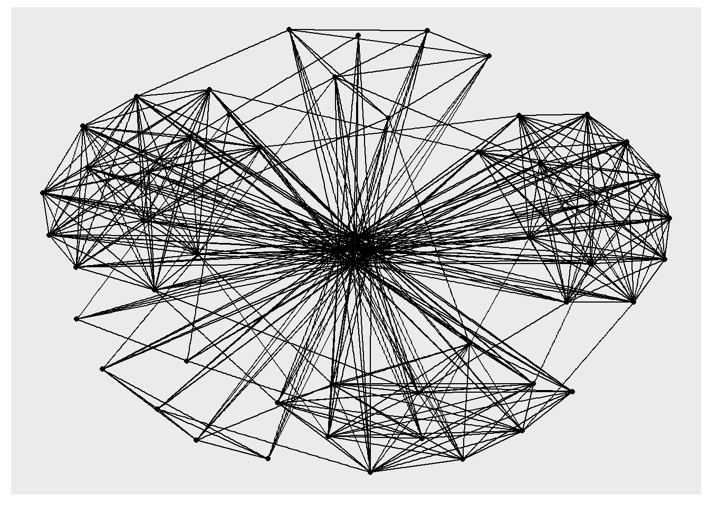
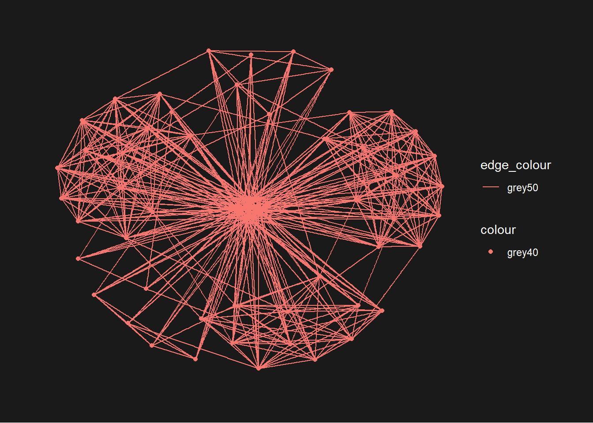
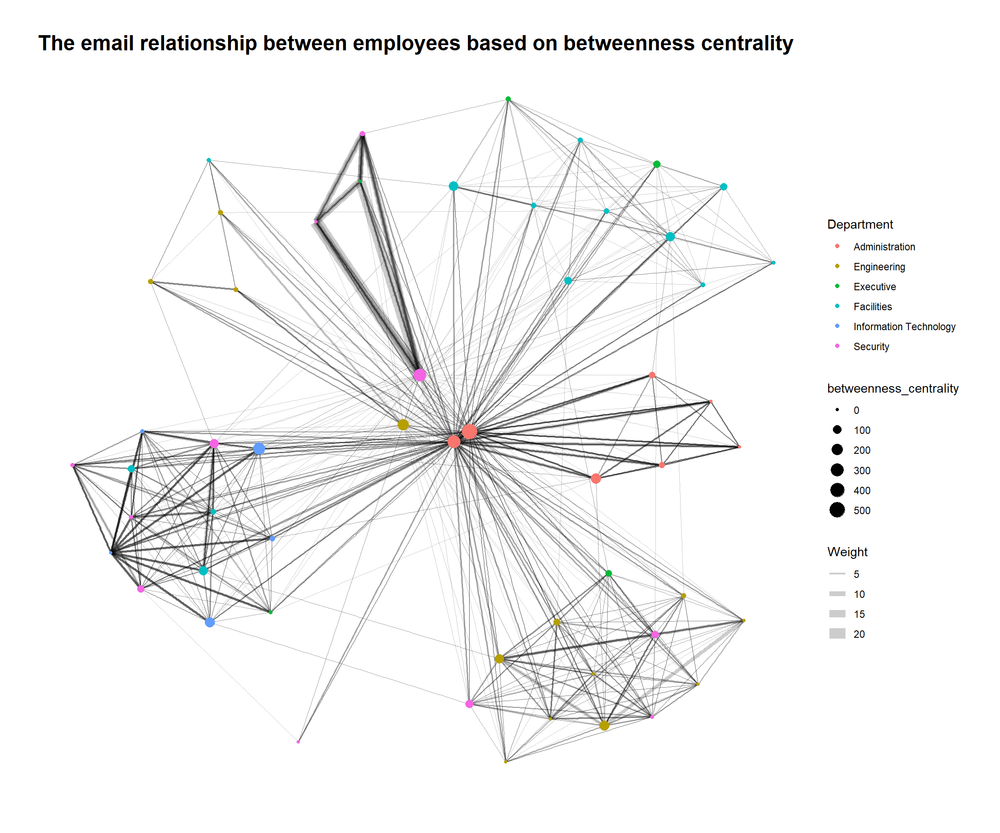
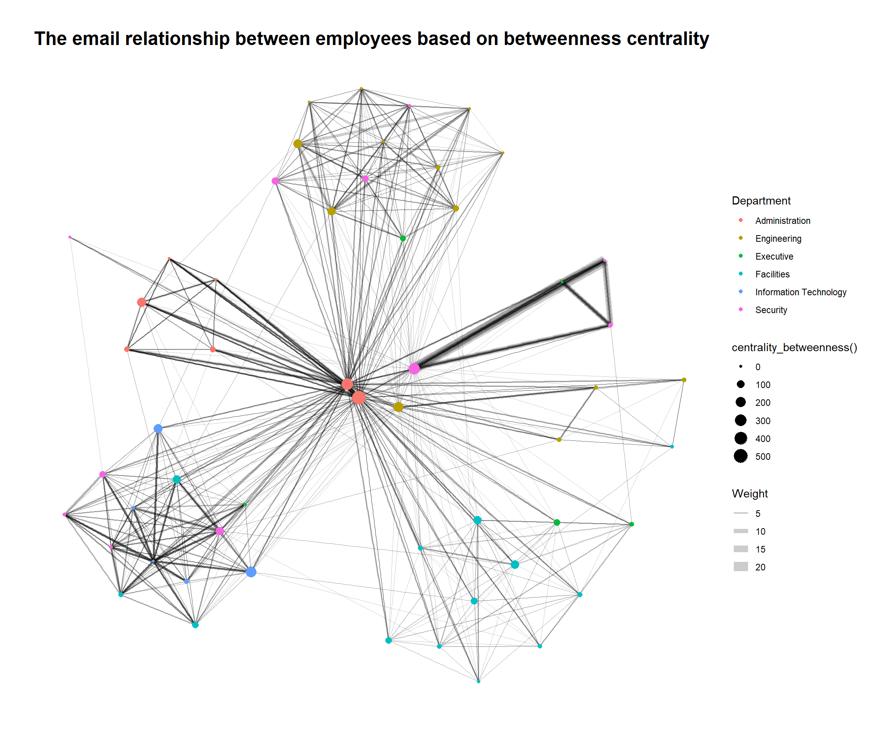
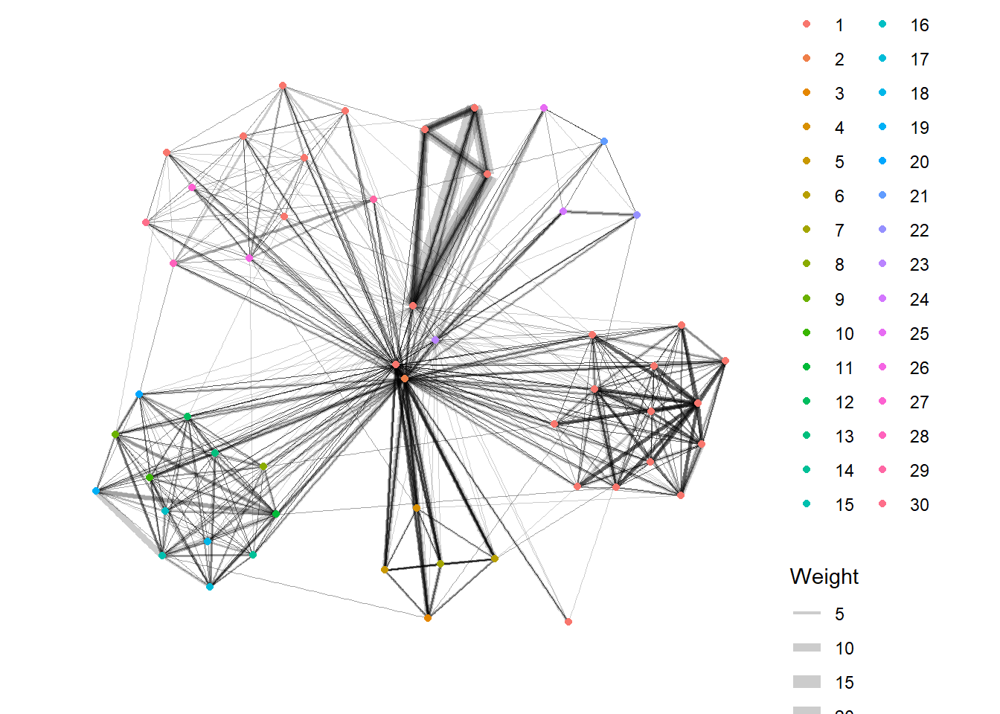

pacman::p_load(tidyverse, lubridate, igraph, tidygraph, ggraph, visNetwork)Hands-on Exercise 8: Modelling, Visualising and Analysing Network data with R
[Added date modified field on 16 Mar as I realised it was missing]
1 About this Exercise
In this hands- on exercise, we will learn how to model, analyse and visualise network data using R. In particular, we will learn how to:
- create graph object data frames, manipulate them using appropriate functions of dplyr, lubridate and tidygraph,
- build network visualisation using appropriate functions of ggraph,
- compute network geometrics using tidygraph,
- build advanced graph visualisation by incorporating the network geometrics, and
- build interactive network visualisation using visNetwork package.
2 Getting Started
Before we start, let us ensure that the required R packages have been installed and import the relevant data for this hands-on exercise.
2.1 Installing and Loading R Packages
For this exercise, other than tidyverse and lubridate, we will use the following packages:
igraph:Routines for simple graphs and network analysis. It can handle large graphs very well and provides functions for generating random and regular graphs, graph visualization, centrality methods and much more.
tidygraph:provides a tidy API for graph/network manipulation.
ggraph:an extension of ggplot2 aimed at supporting relational data structures such as networks, graphs, and trees.
visNetwork:for network visualization, using vis.js javascript library
The code chunk below uses p_load() of pacman package to check if the abovementioned packages are installed in the computer. If they are, they will be launched in R. Otherwise, pacman will install the relevant packages before launching them.
2.2 Importing Data into R
The data sets used in this hands-on exercise are from an oil exploration and extraction company. There are two data sets: one data set contains the nodes data and the other contains the edges (also know as link) data. We will import them using read_csv() of readr package.
node <- read_csv("data/GAStech_email_node.csv")
head(node)# A tibble: 6 × 4
id label Department Title
<dbl> <chr> <chr> <chr>
1 1 Mat.Bramar Administration Assistant to CEO
2 2 Anda.Ribera Administration Assistant to CFO
3 3 Rachel.Pantanal Administration Assistant to CIO
4 4 Linda.Lagos Administration Assistant to COO
5 5 Ruscella.Mies.Haber Administration Assistant to Engineering Group Manag…
6 6 Carla.Forluniau Administration Assistant to IT Group Manager GAStech_email_nodes.csv consist of the name, department and title of the employees.
edge <- read_csv("data/GAStech_email_edge-v2.csv")
head(edge)# A tibble: 6 × 8
source target SentDate SentTime Subject MainSubject sourceLabel targetLabel
<dbl> <dbl> <chr> <time> <chr> <chr> <chr> <chr>
1 43 41 6/1/2014 08:39 GT-Seismi… Work relat… Sven.Flecha Isak.Baza
2 43 40 6/1/2014 08:39 GT-Seismi… Work relat… Sven.Flecha Lucas.Alca…
3 44 51 6/1/2014 08:58 Inspectio… Work relat… Kanon.Herr… Felix.Resu…
4 44 52 6/1/2014 08:58 Inspectio… Work relat… Kanon.Herr… Hideki.Coc…
5 44 53 6/1/2014 08:58 Inspectio… Work relat… Kanon.Herr… Inga.Ferro
6 44 45 6/1/2014 08:58 Inspectio… Work relat… Kanon.Herr… Varja.LagosGAStech-email_edges.csv consists of emails correspondances between the employees.
3 Data Checks
We will now examine the structure of the data frame using glimpse() of dplyr.
glimpse(node)Rows: 54
Columns: 4
$ id <dbl> 1, 2, 3, 4, 5, 6, 7, 44, 45, 46, 8, 9, 10, 11, 12, 13, 14, …
$ label <chr> "Mat.Bramar", "Anda.Ribera", "Rachel.Pantanal", "Linda.Lago…
$ Department <chr> "Administration", "Administration", "Administration", "Admi…
$ Title <chr> "Assistant to CEO", "Assistant to CFO", "Assistant to CIO",…glimpse(edge)Rows: 9,063
Columns: 8
$ source <dbl> 43, 43, 44, 44, 44, 44, 44, 44, 44, 44, 44, 44, 26, 26, 26…
$ target <dbl> 41, 40, 51, 52, 53, 45, 44, 46, 48, 49, 47, 54, 27, 28, 29…
$ SentDate <chr> "6/1/2014", "6/1/2014", "6/1/2014", "6/1/2014", "6/1/2014"…
$ SentTime <time> 08:39:00, 08:39:00, 08:58:00, 08:58:00, 08:58:00, 08:58:0…
$ Subject <chr> "GT-SeismicProcessorPro Bug Report", "GT-SeismicProcessorP…
$ MainSubject <chr> "Work related", "Work related", "Work related", "Work rela…
$ sourceLabel <chr> "Sven.Flecha", "Sven.Flecha", "Kanon.Herrero", "Kanon.Herr…
$ targetLabel <chr> "Isak.Baza", "Lucas.Alcazar", "Felix.Resumir", "Hideki.Coc…
Observations
From the node table, we see that each employee is given an
id, which is then used as thesourceandtargetfor the edge table.the edge table’s
SentDateconsists of date but it is treated as characters. We should change it to date data type.
edge <- edge %>%
mutate(SentDate = dmy(SentDate)) %>%
mutate(Weekday = wday(SentDate,
label = TRUE,
abbr = FALSE))
glimpse(edge)Rows: 9,063
Columns: 9
$ source <dbl> 43, 43, 44, 44, 44, 44, 44, 44, 44, 44, 44, 44, 26, 26, 26…
$ target <dbl> 41, 40, 51, 52, 53, 45, 44, 46, 48, 49, 47, 54, 27, 28, 29…
$ SentDate <date> 2014-01-06, 2014-01-06, 2014-01-06, 2014-01-06, 2014-01-0…
$ SentTime <time> 08:39:00, 08:39:00, 08:58:00, 08:58:00, 08:58:00, 08:58:0…
$ Subject <chr> "GT-SeismicProcessorPro Bug Report", "GT-SeismicProcessorP…
$ MainSubject <chr> "Work related", "Work related", "Work related", "Work rela…
$ sourceLabel <chr> "Sven.Flecha", "Sven.Flecha", "Kanon.Herrero", "Kanon.Herr…
$ targetLabel <chr> "Isak.Baza", "Lucas.Alcazar", "Felix.Resumir", "Hideki.Coc…
$ Weekday <ord> Monday, Monday, Monday, Monday, Monday, Monday, Monday, Mo…
Observations
SentDateis now a Date data type after we usedmy()to transform theSentDate.A new column
Weekdayhas been created usingwday(), which returns the day of the week as a decimal number or an ordered factor if label is TRUE. The argument abbr is FALSE keep the daya spells in full, i.e. Monday.
A close examination of edge data frame reveals that it consists of individual e-mail flow records. This is not very useful for visualisation.Hence, we will aggregate the individual by date, senders, receivers, main subject and day of the week.
edge_aggregated <- edge %>%
filter(MainSubject == "Work related") %>%
group_by(source, target, Weekday) %>%
summarise(Weight = n()) %>%
filter(source != target) %>%
filter(Weight > 1) %>%
ungroup()
glimpse(edge_aggregated)Rows: 1,456
Columns: 4
$ source <dbl> 1, 1, 1, 1, 1, 1, 1, 1, 1, 1, 1, 1, 1, 1, 1, 1, 1, 1, 1, 1, 1,…
$ target <dbl> 2, 2, 2, 2, 3, 3, 3, 3, 4, 4, 4, 4, 5, 5, 5, 5, 6, 6, 6, 6, 7,…
$ Weekday <ord> Monday, Tuesday, Wednesday, Friday, Monday, Tuesday, Wednesday…
$ Weight <int> 4, 3, 5, 8, 4, 3, 5, 8, 4, 3, 5, 8, 4, 3, 5, 8, 4, 3, 5, 8, 4,…
Observations
- We filtered those “Work related” emails using
MainSubject. Then perform group_by using the source, target and Weekday. Then we create a new fieldWeightby counting the number of emails resulting from the group_by. We also remove those emails where the source and target are the same employees and those weights that are less than 1 to get the resultant tableedge_aggregated.
4 Creating network objects using tidygraph
In this section, we will learn how to create a graph data model by using tidygraph package. It provides a tidy API for graph/network manipulation. While network data itself is not tidy, it can be envisioned as two tidy tables, one for node data and one for edge data. tidygraph provides a way to switch between the two tables and provides dplyr verbs for manipulating them. Furthermore it provides access to a lot of graph algorithms with return values that facilitate their use in a tidy workflow.
4.1 tbl_graph object
Graphs and networks can come from many sources, or be created by simulation or deterministacally. Tidygraph provides conversions from all well-known structures in R, as well as a range of create_() and play_*() functions for creating well-defined or simulated graphs.
We can make use of tbl_graph() and as_tbl_graph() to create network objects.
tbl_graph()creates a tbl_graph network object from nodes and edges data.as_tbl_graph()converts network data and objects to a tbl_graph network. Below are network data and objects supported byas_tbl_graph()a node data.frame and an edge data.frame,
data.frame, list, matrix from base,
igraph from igraph,
network from network,
dendrogram and hclust from stats,
Node from data.tree,
phylo and evonet from ape, and
graphNEL, graphAM, graphBAM from graph (in Bioconductor).
4.2 dplyr verbs in tidygraph
activate()verb from tidygraph serves as a switch between tibbles for nodes and edges. All dplyr verbs applied to tbl_graph object are applied to the active tibble..N()function is used to gain access to the node data while manipulating the edge data..E()function is used to gain access to the edge data..G()function is used to give us the tbl_graph object itself.
4.3 Building tidygraph data model
In this section, we will use tbl_graph() of tinygraph package to build an tidygraph’s network graph data.frame.
graph <- tbl_graph(nodes = node,
edges = edge_aggregated,
directed = TRUE)
graph # A tbl_graph: 54 nodes and 1456 edges
#
# A directed multigraph with 1 component
#
# Node Data: 54 × 4 (active)
id label Department Title
<dbl> <chr> <chr> <chr>
1 1 Mat.Bramar Administration Assistant to CEO
2 2 Anda.Ribera Administration Assistant to CFO
3 3 Rachel.Pantanal Administration Assistant to CIO
4 4 Linda.Lagos Administration Assistant to COO
5 5 Ruscella.Mies.Haber Administration Assistant to Engineering Group Mana…
6 6 Carla.Forluniau Administration Assistant to IT Group Manager
7 7 Cornelia.Lais Administration Assistant to Security Group Manager
8 44 Kanon.Herrero Security Badging Office
9 45 Varja.Lagos Security Badging Office
10 46 Stenig.Fusil Security Building Control
# ℹ 44 more rows
#
# Edge Data: 1,456 × 4
from to Weekday Weight
<int> <int> <ord> <int>
1 1 2 Monday 4
2 1 2 Tuesday 3
3 1 2 Wednesday 5
# ℹ 1,453 more rows
Observations
- The output above reveals that GAStech_graph is a tbl_graph object with 54 nodes and 4541 edges.
- The command also prints the first six rows of “Node Data” and the first three of “Edge Data”.
- It states that the Node Data is active. The notion of an active tibble within a tbl_graph object makes it possible to manipulate the data in one tibble at a time.
4.4 Changing the active object
The nodes tibble data frame is activated by default, but you can change which tibble data frame is active with the activate() function. Thus, if we wanted to rearrange the rows in the edges tibble to list those with the highest “weight” first, we could use activate() and then arrange().
graph %>%
activate(edges) %>%
arrange(desc(Weight))# A tbl_graph: 54 nodes and 1456 edges
#
# A directed multigraph with 1 component
#
# Edge Data: 1,456 × 4 (active)
from to Weekday Weight
<int> <int> <ord> <int>
1 40 41 Tuesday 23
2 40 43 Tuesday 19
3 41 43 Tuesday 15
4 41 40 Tuesday 14
5 42 41 Tuesday 13
6 42 40 Tuesday 12
7 42 43 Tuesday 11
8 43 42 Wednesday 11
9 36 32 Wednesday 9
10 40 41 Monday 9
# ℹ 1,446 more rows
#
# Node Data: 54 × 4
id label Department Title
<dbl> <chr> <chr> <chr>
1 1 Mat.Bramar Administration Assistant to CEO
2 2 Anda.Ribera Administration Assistant to CFO
3 3 Rachel.Pantanal Administration Assistant to CIO
# ℹ 51 more rows5 Plotting Static Network Graphs using ggraph
ggraph is an extension of ggplot2, making it easier to carry over basic ggplot skills to the design of network graphs.
As in all network graph, there are three main aspects to a ggraph’s network graph, they are:
- The Layout defines how nodes are placed on the plot, that is, it is a conversion of the relational structure into an x and y value for each node in the graph. ggraph has access to all layout functions available in igraph and furthermore provides a large selection of its own, such as hive plots, treemaps, and circle packing.
- The Nodes are the connected entities in the relational structure. These can be plotted using the geom_node_*() family of geoms. Some node geoms make more sense for certain layouts, e.g. geom_node_tile() for treemaps and icicle plots, while others are more general purpose, e.g. geom_node_point().
- The Edges are the connections between the entities in the relational structure. These can be visualized using the geom_edge_*() family of geoms that contain a lot of different edge types for different scenarios. Sometimes the edges are implied by the layout (e.g. with treemaps) and need not be plotted, but often some sort of line is warranted.
5.1 Plotting a basic network graph
The code chunk below uses ggraph(), geom-edge_link() and geom_node_point() to plot a network graph by using graph which is the tbl_graph object that we created in previous section.
ggraph(graph) +
geom_edge_link() +
geom_node_point()
Note
- The basic plotting function is
ggraph(), which takes the data to be used for the graph and the type of layout desired. - Both of the arguments for
ggraph()are built around igraph. Therefore,ggraph()can use either an igraph object or a tbl_graph object.
5.2 Customising ggraph’s network graphs
We can use ggraph’s theme_graph() to further customise our network graph. This theme_graph() is tuned for graph visualisations because the coordinate values are often of no importance and axes are thus a distraction. Hence, ggraph has theme_graph(), a built-in theme to remove redundant elements. Furthermore the default behaviour is to use a narrow font so text takes up less space. Theme colour is defined by a background and foreground colour where the background defines the colour of the whole graphics area and the foreground defines the colour of the strip and border. By default strip and border is turned off as it is an unnecessary element unless facetting is used. To add a foreground colour to a plot that is already using theme_graph the th_foreground helper is provided. In order to use this appearance as default use the set_graph_style function. An added benefit of this is that it also changes the default text-related values in the different geoms for a completely coherent look. unset_graph_style can be used to revert the defaults back to their default settings (that is, they are not necessarily reverted back to what they were prior to calling set_graph_style). The th_no_axes() helper is provided to modify an existing theme so that grid and axes are removed.
#create the graph
g <- ggraph(graph) +
geom_edge_link(aes()) +
geom_node_point(aes())
#adding the theme
g + theme_graph()
5.2.1 Changing the plot colour
theme_graph() makes it easy to change the coloring of the plot.
g <- ggraph(graph) +
geom_edge_link(aes(colour = 'grey50')) +
geom_node_point(aes(colour = 'grey40'))
g + theme_graph(background = 'grey10',
text_colour = 'white')
5.3 Working with ggraph’s layouts
ggraph support many layout for standard used, they are: star, circle, nicely (default), dh, gem, graphopt, grid, mds, spahere, randomly, fr, kk, drl and lgl. Figures below and on the right show layouts supported by ggraph().
g <- ggraph(graph,
layout = "fr") +
geom_edge_link(aes()) +
geom_node_point(aes())
g + theme_graph()g <- ggraph(graph,
layout = "star") +
geom_edge_link(aes()) +
geom_node_point(aes())
g + theme_graph()
g <- ggraph(graph,
layout = "eigen") +
geom_edge_link(aes()) +
geom_node_point(aes())
g + theme_graph()5.4 Modifying network nodes
We can also define the colour each node by referring to their respective departments.
g <- ggraph(graph,
layout = "nicely") +
geom_edge_link(aes()) +
geom_node_point(aes(colour = Department,
size = 3))
g + theme_graph()
Observations
- geom_node_point is equivalent in functionality to geo_point of ggplot2. It allows for simple plotting of nodes in different shapes, colours and sizes. In the codes chnuks above colour and size are used.
5.5 Modifying Edges
We can also modify the edges such that the thickness of the edges will be mapped with the Weight variable.
g <- ggraph(graph,
layout = "nicely") +
geom_edge_link(aes(width=Weight),
alpha=0.2) +
scale_edge_width(range = c(0.1, 5)) +
geom_node_point(aes(colour = Department),
size = 3)
g + theme_graph()
Note
geom_edge_link draws edges in the simplest way - as straight lines between the start and end nodes. But, it can do more that that. In the example above, argument width is used to map the width of the line in proportional to the Weight attribute and argument alpha is used to introduce opacity on the line.
5.6 Creating Facet Graphs
Another very useful feature of ggraph is faceting. In visualising network data, this technique can be used to reduce edge over-plotting in a very meaning way by spreading nodes and edges out based on their attributes.
There are three functions in ggraph to implement faceting, they are:
facet_nodes()whereby edges are only draw in a panel if both terminal nodes are present here,facet_edges()whereby nodes are always drawn in a panels even if the node data contains an attribute named the same as the one used for the edge facetting, andfacet_graph()faceting on two variables simultaneously.
5.6.1 facet_edges()
This function creates small multiples based on edge attributes. It is equivalent to ggplot::facet_wrap() but only facet edges. Nodes are repeated in every panel.
set_graph_style()
g <- ggraph(graph, layout = "nicely") +
geom_edge_link(aes(width=Weight),
alpha = 0.2) +
scale_edge_width(range = c(0.1, 5)) +
geom_node_point(aes(color = Department),
size = 2)
g + facet_edges(~Weekday)Currently the legend is on the right side. We can use theme() to change the position of the legend.
set_graph_style()
g <- ggraph(graph, layout = "nicely") +
geom_edge_link(aes(width=Weight),
alpha = 0.2) +
scale_edge_width(range = c(0.1, 5)) +
geom_node_point(aes(color = Department),
size = 2) +
theme(legend.position = "bottom")
g + facet_edges(~Weekday)We can also add frame to each facet graph using th_foreground().
set_graph_style()
g <- ggraph(graph, layout = "nicely") +
geom_edge_link(aes(width=Weight),
alpha = 0.2) +
scale_edge_width(range = c(0.1, 5)) +
geom_node_point(aes(color = Department),
size = 2) +
theme(legend.position = "bottom")
g + facet_edges(~Weekday) +
th_foreground(foreground = "skyblue",
border = TRUE)5.6.2 facet_nodes()
facet_nodes() creates small multiples based on node attributes. This function is equivalent to ggplot2::facet_wrap() but only facets nodes. Edges are drawn if their terminal nodes are both present in a panel.
set_graph_style()
g <- ggraph(graph, layout = "nicely") +
geom_edge_link(aes(width=Weight),
alpha = 0.2) +
scale_edge_width(range = c(0.1, 5)) +
geom_node_point(aes(color = Department),
size = 2)
g + facet_nodes(~Department) +
th_foreground(foreground = "skyblue",
border = TRUE) +
theme(legend.position = 'bottom')
6 Network Metrics Analysis
Centrality measures are a collection of statistical indices use to describe the relative important of the actors are to a network. There are four well-known centrality measures, namely: degree, betweenness, closeness and eigenvector. For more information on centrality measures, please refer to A User’s Guide to Network Analysis in R.
6.1 Computing and Visualising Centrality Indices
It is important to note that from ggraph v2.0 onward tidygraph algorithms such as centrality measures can be accessed directly in ggraph calls. This means that it is no longer necessary to precompute and store derived node and edge centrality measures on the graph in order to use them in a plot.
The code chunks below show how to compute and visualise graphs based on centrality indices before ggraph v2.0 and after ggraph v2.0.
g <- graph %>%
mutate(betweenness_centrality = centrality_betweenness()) %>%
ggraph(layout = "fr") +
geom_edge_link(aes(width=Weight),
alpha = 0.2) +
scale_edge_width(range = c(0.1, 5)) +
geom_node_point(aes(color = Department,
size = betweenness_centrality))
g + theme_graph() +
labs(title = 'The email relationship between employees based on betweenness centrality')
mutate()of dplyr is used to perform the computation.- the algorithm used, on the other hand, is the centrality_betweenness() of tidygraph.
g <- graph %>%
ggraph(layout = "fr") +
geom_edge_link(aes(width=Weight),
alpha = 0.2) +
scale_edge_width(range = c(0.1, 5)) +
geom_node_point(aes(color = Department,
size = centrality_betweenness()))
g + theme_graph() +
labs(title = 'The email relationship between employees based on betweenness centrality')
6.2 Visualising Community
tidygraph package inherits many of the community detection algorithms imbedded into igraph and makes them available to us, including Edge-betweenness (group_edge_betweenness), Leading eigenvector (group_leading_eigen), Fast-greedy (group_fast_greedy), Louvain (group_louvain), Walktrap (group_walktrap), Label propagation (group_label_prop), InfoMAP (group_infomap), Spinglass (group_spinglass), and Optimal (group_optimal). Some community algorithms are designed to take into account direction or weight, while others ignore it. Use this link to find out more about community detection functions provided by tidygraph.
In the code chunk below group_edge_betweenness() is used.
g <- graph %>%
mutate(community = as.factor(group_edge_betweenness(weights = Weight, directed = TRUE))) %>%
ggraph(layout = "fr") +
geom_edge_link(aes(width = Weight),
alpha = 0.2) +
scale_edge_width(range = c(0.1, 5)) +
geom_node_point(aes(color = community))
g + theme_graph()
7 Building Interactive Network Graph with visNetwork
visNetwork() function uses a nodes list and edges list to create an interactive graph.The nodes list must include an “id” column, and the edge list must have “from” and “to” columns. The function also plots the labels for the nodes, using the names of the actors from the “label” column in the node list.
7.1 Data Preparation
Before we can plot the interactive graph, let us prepare the data using the following code chunk so that it has the required columns.
edge_aggregated2 <- edge %>%
left_join(node, by = c("sourceLabel" = "label")) %>%
rename(from = id) %>%
left_join(node, by = c("targetLabel" = "label")) %>%
rename(to = id) %>%
filter(MainSubject == "Work related") %>%
group_by(from, to) %>%
summarise(weight = n()) %>%
filter(from != to) %>%
filter(weight >1) %>%
ungroup()
head(edge_aggregated2)# A tibble: 6 × 3
from to weight
<dbl> <dbl> <int>
1 1 2 21
2 1 3 21
3 1 4 21
4 1 5 21
5 1 6 21
6 1 7 21
About the above code chunk
Perform left join between edge dataframe and node dataframe using the sourceLabel and label columns from the respective dataframe. By doing so, the resulting dataframe have additional information (i.e. id, group and title) about the source employee.
rename
idtofromso that we can use thisfromcolumn later.Perform left join between edge dataframe and node dataframe using the targetLabel and label columns from the respective dataframe. By doing so, the resulting dataframe have additional information (i.e. id, group and title) about the target employee.
rename
idtotoso that we can use thistocolumn later.filter the rows where the
MainSubjectis related to workThen perform group_by using
fromandto.Then we create a new field
Weightby counting the number of emails resulting from the group_by.We also remove those emails where the source and target are the same employees and those weights that are less than 1 to get the resultant table
edge_aggregated2.
7.2 Plotting the first interactive network graph
Let us plot an interactive network graph using the data prepared.
visNetwork(node,
edge_aggregated2)7.3 Working with layout
We can change the layout of the network graph by specifying the type of layout we want using the function visIgraphLayout()
visNetwork(node,
edge_aggregated2) %>%
visIgraphLayout(layout = "layout_with_fr")7.4 Working with visual attributes - Notes
visNetwork() looks for a field called “group” in the nodes object and colour the nodes according to the values of the group field.
The code chunk below rename Department field to group.
node <- node %>%
rename(group = Department)When we rerun the code chunk below, visNetwork shades the nodes by assigning unique colour to each category in the group field.
visNetwork(node,
edge_aggregated2) %>%
visIgraphLayout(layout = "layout_with_fr") %>%
visLegend() %>%
visLayout(randomSeed = 2024)7.5 Working with visual attributes - Edges
In the code run below visEdges() is used to symbolise the edges. - The argument arrows is used to define where to place the arrow. - The smooth argument is used to plot the edges using a smooth curve.
visNetwork(node,
edge_aggregated2) %>%
visIgraphLayout(layout = "layout_with_fr") %>%
visEdges(arrows = "to",
smooth = list(enables = TRUE,
type = "curvedCW")) %>%
visLegend() %>%
visLayout(randomSeed = 2024)7.6 Interactivity
In the code chunk below, visOptions() is used to incorporate interactivity features in the data visualisation.
About the code chunk
The argument highlightNearest highlights nearest when clicking a node. The argument nodesIdSelection adds an id node selection creating an HTML select element.
visNetwork(node,
edge_aggregated2) %>%
visIgraphLayout(layout = "layout_with_fr") %>%
visOptions(highlightNearest = TRUE,
nodesIdSelection = TRUE) %>%
visLegend() %>%
visLayout(randomSeed = 2024)8 References
Pedersen T (2024). tidygraph: A Tidy API for Graph Manipulation. R package version 1.3.1.9000, https://github.com/thomasp85/tidygraph, https://tidygraph.data-imaginist.com.
Pedersen T (2024). ggraph: An Implementation of Grammar of Graphics for Graphs and Networks. R package version 2.2.0.9000, https://github.com/thomasp85/ggraph, https://ggraph.data-imaginist.com.
https://datastorm-open.github.io/visNetwork/
https://r.igraph.org/articles/igraph.html